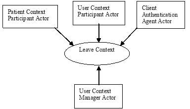
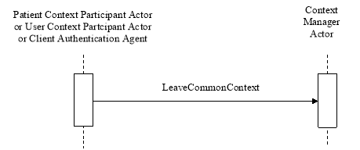

IHE IT Infrastructure (ITI)
Technical Framework
Revision 16.0 – Final Text
This section corresponds to t ransaction [ ITI-7 ] of the IHE IT Infrastructure Technical Framework. Transaction [ ITI-7 ] is used by the Patient Context Participant, User Context Participant, Client Authentication Agent, and Context Manager Actors.
This transaction allows for an application supporting the Patient Context Participant, User Context Participant, or Client Authentication Agent to terminate participation in a context management session in which it is participating.
A Context Participant notifies the Context Manager that is leaving the common context. The semantics of the methods used are defined in the documents HL7 Context Management “CCOW” Standard: Component Technology Mapping: ActiveX or HL7 Context Management “CCOW” Standard: Component Technology Mapping: Web . The Context Participant can choose the technology implementation it wishes to implement. The Context Manager must support both technology implementations in order to accommodate whichever implementation a joining participant ends up choosing.

Actor: Patient Context Participant
Role: Initiates notification to the Context Manager that it will no longer be participating in the context management session.
Actor: User Context Participant
Role: Initiates notification to the Context Manager that it will no longer be participating in the context management session.
Actor: Client Authentication Agent
Role: Initiates notification to the Context Manager that it will no longer be participating in the context management session.
Actor: Context Manager
Role: Responds to the request to leave the context session from the context participant.
HL7 Context Management “CCOW” Standard, Version 1.4:
Technology and Subject Independent Architecture
Component Technology Mapping: ActiveX
Component Technology Mapping: Web

Figure 3.7-1: Leave Context Sequence
This transaction is triggered by the user closing an application that contains a Patient Context Participant Actor, a User Context Participant Actor, or Client Authentication Agent Actor.
LeaveContext is defined as a method on the ContextManager interface. It shall be invoked by a Context Participant to announce its departure from the secure context session. A Context Participant shall provide parameters for this method as specified in the CCOW Standard.
Refer to the HL7 Context Management “CCOW” Standard: Technology and Subject-Independent Architecture document, Section 17.3.6.4, for a description of the parameters associated with this method.
The Context Manager acknowledges the receipt of the notification. Refer to the HL7 Context Management “CCOW” Standard: Technology and Subject-Independent Architecture document, Section 17.3.6.4, for a description of the response issued by the Context Manager Actor.
The context participant is expected to dispose of all context manager interface references upon receipt of the message reply. No further context change transactions will be processed by the Context Manager for this context participant.